Welcome to the Hall of Artists!
Click on the images to find out more!
Previous
Next
Prehistoric Music
The earliest forms of music were probably drum-based, percussion instruments being the most readily available at the time (i.e. rocks, sticks). These simplest of simple instruments are thought to have been used in religious
ceremonies as representations of animals. There was no notation or writing of this kind of "music" and its sounds can only be extrapolated from the music of (South) American Indians and African natives who still adhere to some of the ancient
religious practices.
As for the more advanced instruments, their evolution was slow and steady. It is known that by 4000 BCE the Egyptians had created harps and flutes, and by 3500 BCE lyres and double-reeded clarinets had been developed.
In Denmark, by 2500 BCE an early form of the trumpet had been developed. This trumpet is what is now known as a "natural trumpet." It is valveless, and depends completely on manipulation of the lips to change pitch.
One of the most popular instruments today was created in 1500 BCE by the Hittites. I am talking about the guitar. This was a great step; the use of frets to change the pitch of a vibrating string would lead to later instruments such as the
violin and harpsichord.
In 800 BCE the first recovered piece of recorded music was found. It was written in cuneiform and was a religious hymn. It should be noted that cuneiform is not a type of musical notation.
By 700 BCE there are records of songs that include vocals with instrumentals. This added a whole new dimension to music: accompaniment.
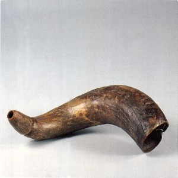
Prehistoric horn
Many of these horns were used as sounding cries by ancient societies.
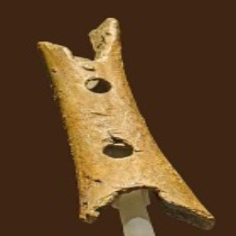
Paleolithic Flute
This flute is over 35,000 years old!
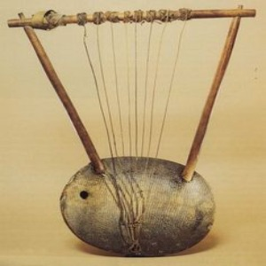
Third slide label
Praesent commodo cursus magna, vel scelerisque nisl consectetur.
Previous
Next
Music in Ancient Rome and Greece
Greece was the root of all Classical art, so it's no coincidence that Classical music is rooted in Grecian innovations. In 600 BCE, famed mathematician Pythagorus dissected music as a science and developed the keystone of modern
music: the octave scale. The importance of this event is obvious. Music was a passion of the Greeks. With their surplus of leisure time (thanks to slave labor) they were able to cultivate great artistic skills. Trumpet competitions were common
spectator events in Greece by 400 BCE. It was in Greece that the first bricks in music theory's foundation were layed. Aristotle wrote on music theory scientifically, and brought about a method of notation in 350 BCE. The work of that genius is
still studied today.
The next significant step in music's evolution was by Boethius. In 521 CE he brought the Greek system of notation to Western Europe, allowing the musicians there to scribe accurately the folk songs of their lands. Incidentally, it was Boethius
who first wrote on the idea of the opera.

Trio of musicians playing an aulos, cymbala, and tympanum (mosaic from Pompeii)
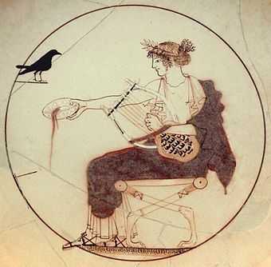
The Cylix of Apollo with the tortoise-shell (chelys) lyre, on a 5th-century BC drinking cup (kylix)
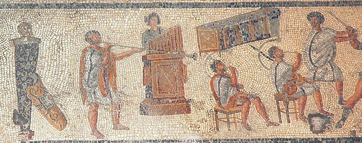
Musicians in a detail from the Zliten mosaic (2nd century AD), originally shown as accompanying gladiator combat and wild-animal events in the arena: from left, the tuba, hydraulis (water pipe organ), and two cornua
Previous
Next
Music in the Middle Ages
Most of the music created after Rome fell was commissioned by the church. The Catholic religion has a long history of involvement (for better or worse) with the musical arts. In 600 CE Pope Gregory had the Schola Cantarum built. This was the
first music school in Europe.
Meanwhile in China, music was progressing also: it was reported that in 612 CE there were orchestras with hundreds of musicians performing for the assorted dynasties. Although the specific music from this period in China is unknown, the
distinct
style supposed to have developed there is reflected even in recent orchestral Asiatic pieces.
In 650 CE a new system of writing music was developed using "neumes" as a notation for groups of notes in music.
144 years after the Schola Cantarum was built, a singing school opened in the Monastery of Fuda, fueling the interest in musical vocation. And by 790 CE, there were splinters of the Schola Cantarum in Paris, Cologne and Metz. In 800 CE the
great
unifier Charlemagne had poems and psalms set to music. In 850 CE Catholic musicians had a breakthrough by inventing the church "modes." These modes would later metamorphose into today's major and minor scales. In 855 CE, the first polyphonic (2
unrelated melodies/voices at once) piece was recorded, and by 1056 this polyphonic style replaced Gregorian chants as the music of choice (even after the Church made polyphonic music "illegal"; this ban was later lifted). In 980 CE, the great
tome Antiphononium Codex Montpellier was scribed.
In 1000 CE Guido D'Arezzo made many improvements in music theory. He first improved and reworked standard notation to be more user-friendly by adding time signatures. Then he invented solfege. This is the vocal note scale: do, re, mi, fa, so,
la
,ti, do. This innovation has affected almost every modern vocalist.
In 1100 CE, a new secular movement began. This separation of Church from music was a straddling one, and soon this new "folk" music was looked down upon as pagan and borderline blasphemous.
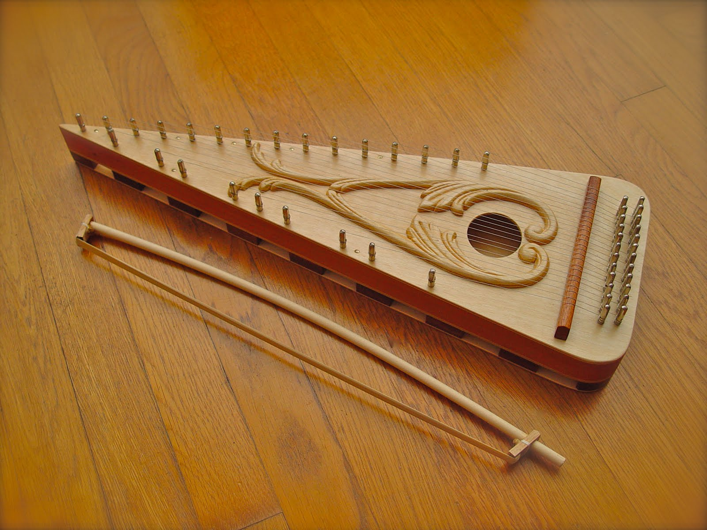
The Psaltery
This bowed string instrument was unique to the middle images
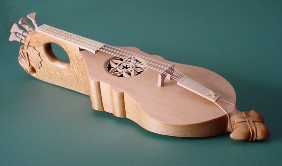
The Citole
This is a plucked string instrument that was used during the middle ages
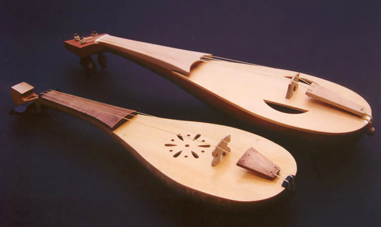
The Rebec
primarily developed in the middle ages, this instrument gave way to the modern violin
Previous
Next
The Renaissance
On the dawn of the Renaissance in 1465 the printing press was first used to print music. By using a press a composer could organize his pieces and profit from them with great ease. In 1490 Boethius's writings on opera were
republished in
Italian.
With the onset of the Renaissance, the rules of music were about to change drastically. This was the beginning of a new enlightened age that would showcase some of the greatest musical minds ever produced.
The history of music at this point is best told by the styles that emerged and the composers who lived after the Renaissance.
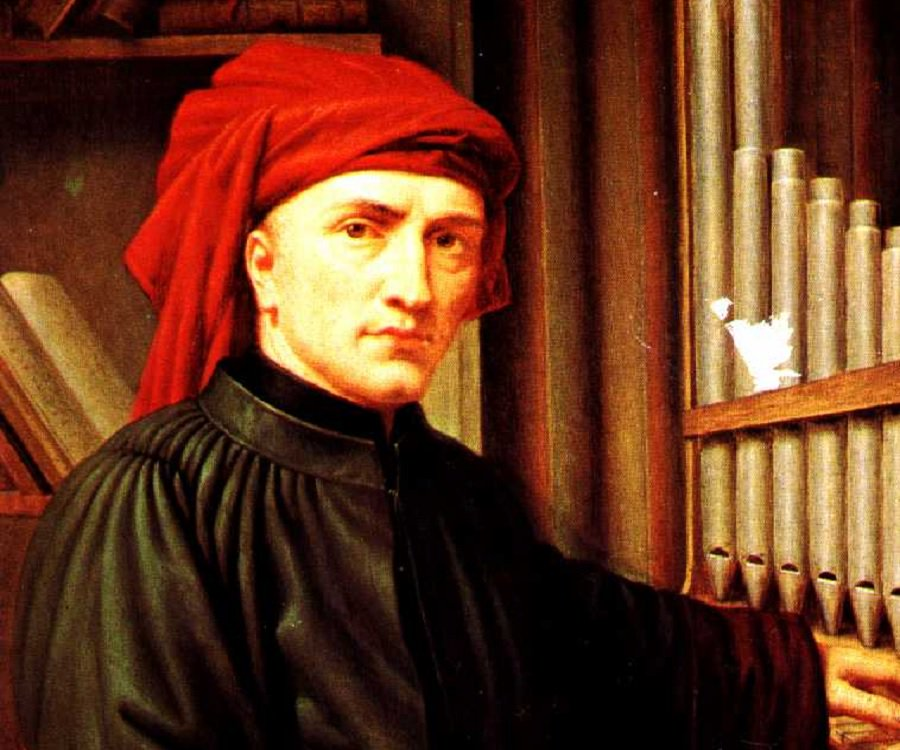
Josquin Desprez
One of the main

Paleolithic Flute
This flute is over 35,000 years old!
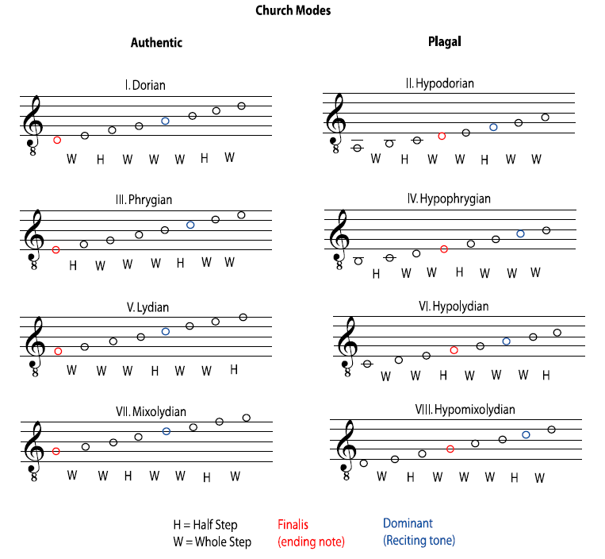
Previous
Next
The Baroque Period
With the great innovations of the Renaissance also came new instruments and new ways of building those instruments. Most notable of these were the pianoforte, a precursor to the modern piano, as well as the truly superior violins built by the
Stradivari family. No matter the instrument, a greater span of music was now available, and composers were eager to take advantage of it.
Additionally, 1600 marked a period of social upheaval in Europe. The Roman Catholic Church, once unified in much of Europe, was split by the Protestant Reformation, which created various Protestant denominations throughout Northern Europe. The
Catholic Church, seeking to regain its former reach, soon was encouraging musicians and composers to write work that could appeal to the masses.
However, the Baroque period was not merely about religion. Indeed, it was this period of musical history that saw the birth of one of the greatest genres in the Western canon, the opera, which combined music with drama. Other types of
composition, such as the concerto, sonata and cantata, were also created during this period.
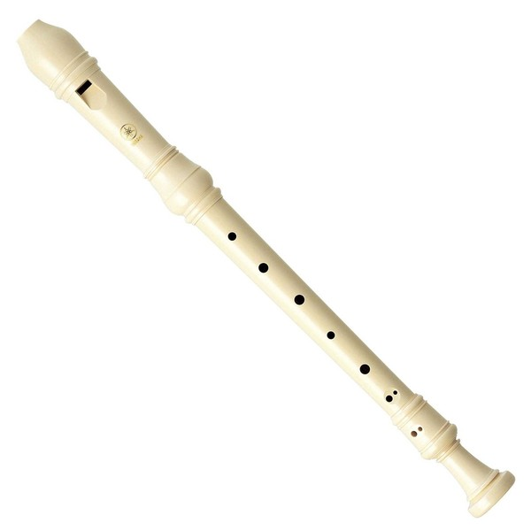
Recorders (flauti dolci) are sometimes used to express humility or poverty, such as in Bach's cantata Brich dem Hungrigen dein Brot, BWV 39.
Claudio Monteverdi
one of his pieces
Previous
Next
The Classical Period
In the classical period, the theme is made up of phrases with contrasting melodic figures and rhythms. These phrases are relatively brief, typically four bars in length, and can occasionally seem sparse or terse. The texture is mainly
homophonic,[2] with a clear melody above a subordinate chordal accompaniment, for instance an Alberti bass. This contrasts with the practice in Baroque music, where a piece or movement would typically have only one musical subject, which would
then be worked out in a number of voices according to the principles of counterpoint, while maintaining a consistent rhythm or metre throughout. As a result, Classical music tends to have a lighter, clearer texture than the Baroque. The
classical style draws on the style galant, a musical style which emphasised light elegance in place of the Baroque's dignified seriousness and impressive grandeur.
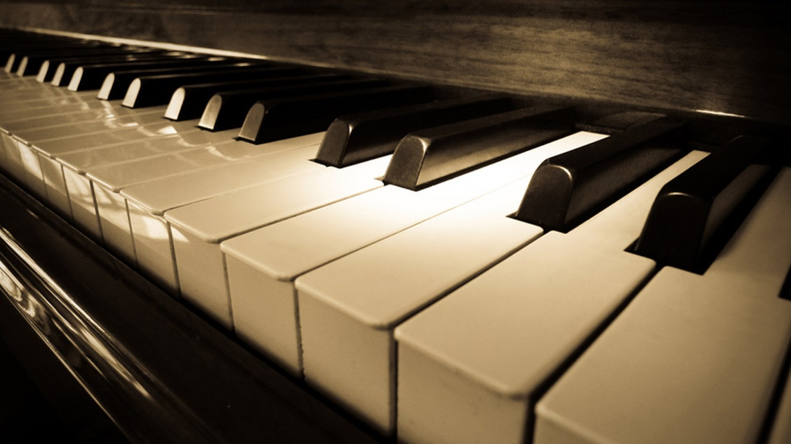
The piano was invented in the early 18th century while the classical era was active
Previous
Next
Romantic Music
The Romantic period of music is characterized as being the most expressive compared to the classical and baroque period. Instead of being a reflection of society it was a stark contrast from it. In fact Romantic music moved toward the
spiritual
and subjective experiences of each person's life and was criticised for lacking any central meaning. Seriously a piece performed in the Romantic could be revolve around connecting with nature to supernatural occurrences but it undoubtedly
created
musical pieces with intense emotional appeal. In my opinion it is one of my favorite forms of 'classical music'
Franz Liszt
Piano Sonata in B minor

Schubert
One of his pieces

Brass
Praesent commodo cursus magna, vel scelerisque nisl consectetur.
Previous
Next
Jazz
Jazz is a musical form that relies on improvisation and rhythmic urgency. Improvisation is a primary way that jazz musicians express themselves, requiring them to be inventive and create music on the spot. Such musical artists often do this by
changing melodies rhythmically or embellishing the melody. The rhythm of jazz is often syncopated, which is when accents occur on the off-beat, and it may be polyrhythmic, which is when multiple, contrasting rhythms occur at the same time.
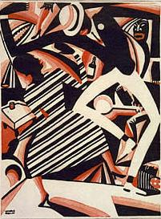
"Interpretation of Harlem Jazz"
painting by F.Winold Reiss
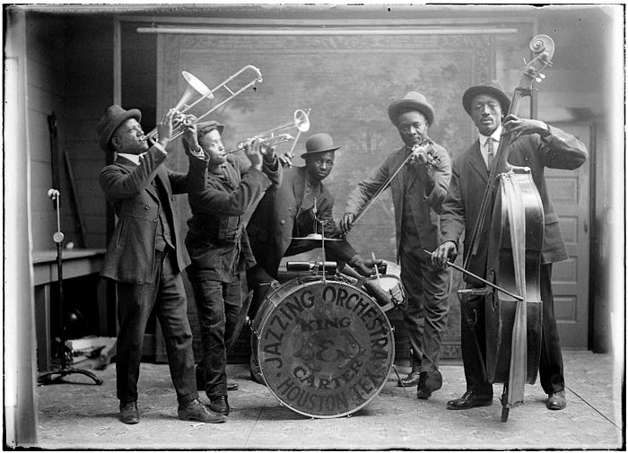
Carter and King Jazzing Orchestra
Previous
Next
Rock
A type of pop music that developed out of rock‘n’roll in the 1960s and 1970s. It is based around amplified instruments, especially the electric guitar and electric bass, and is characterized by a strong bass line and driving rhythms. It is
typically performed by rock groups, and while fast dance music is the staple form, slower ballad-style songs are also a popular part of the repertoire.
Paleolithic Flute
This flute is over 35,000 years old!
Third slide label
Praesent commodo cursus magna, vel scelerisque nisl consectetur.
Previous
Next